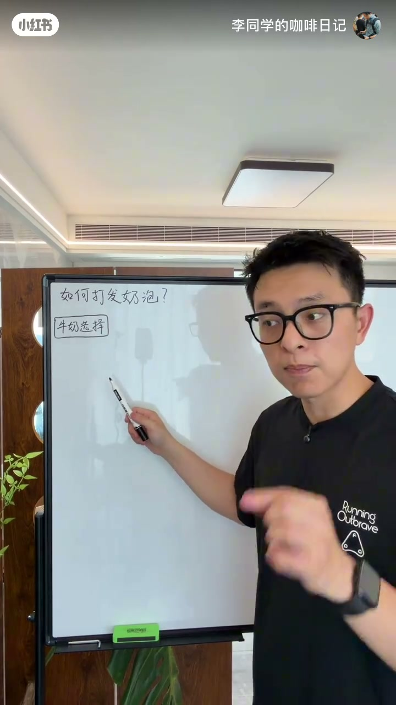
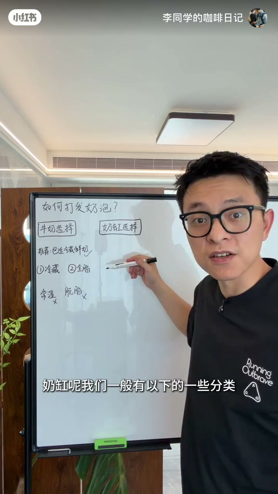
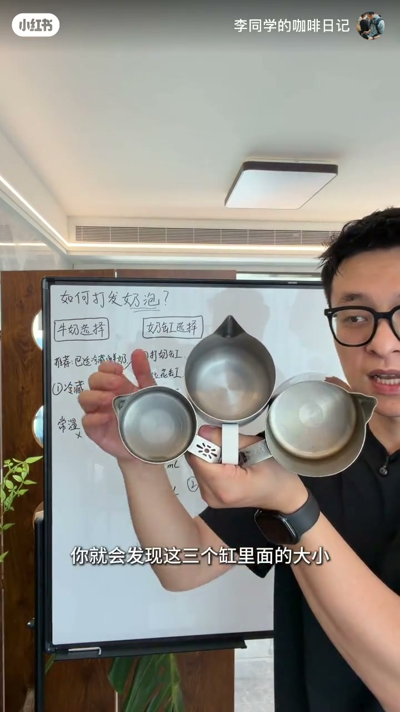
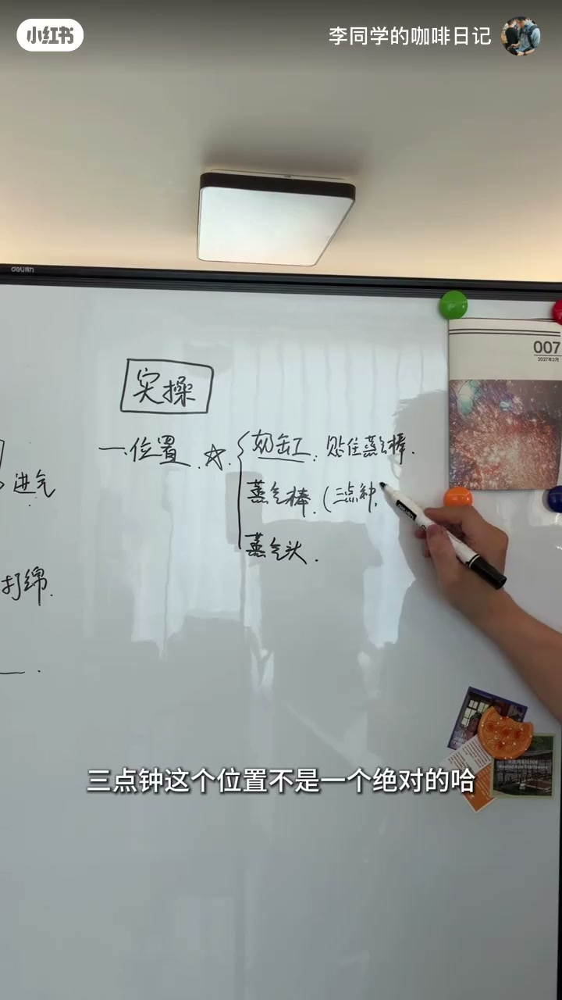
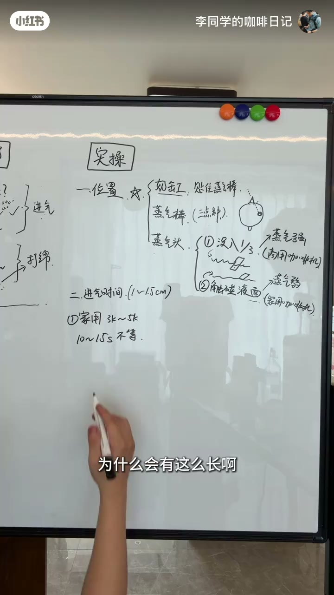
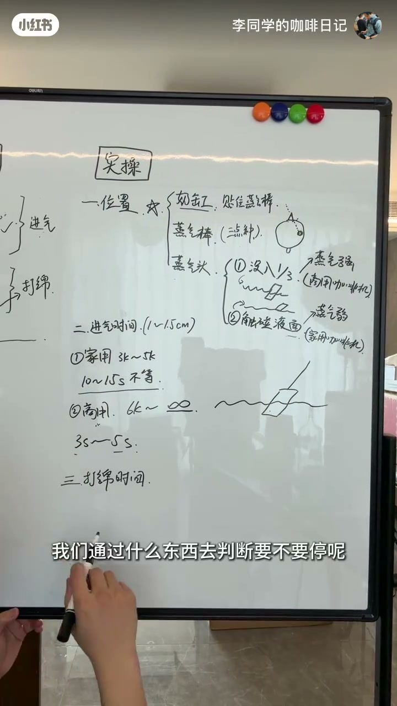
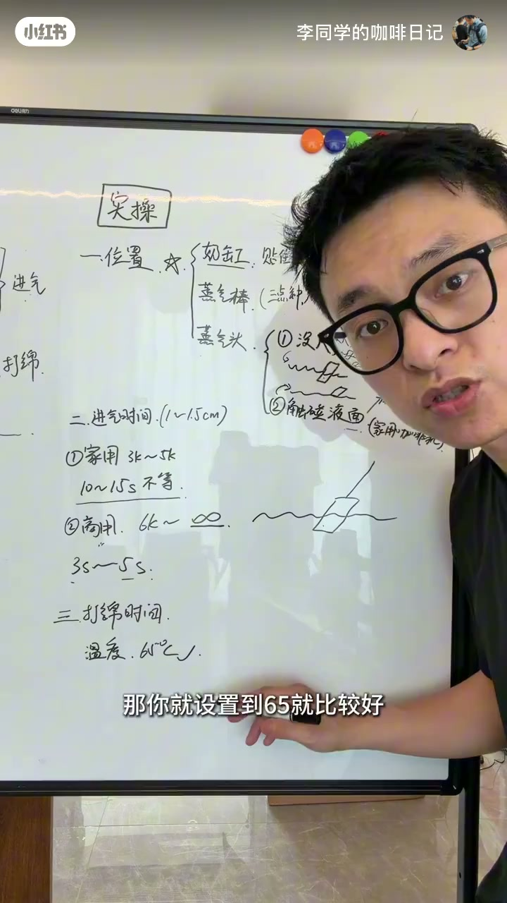
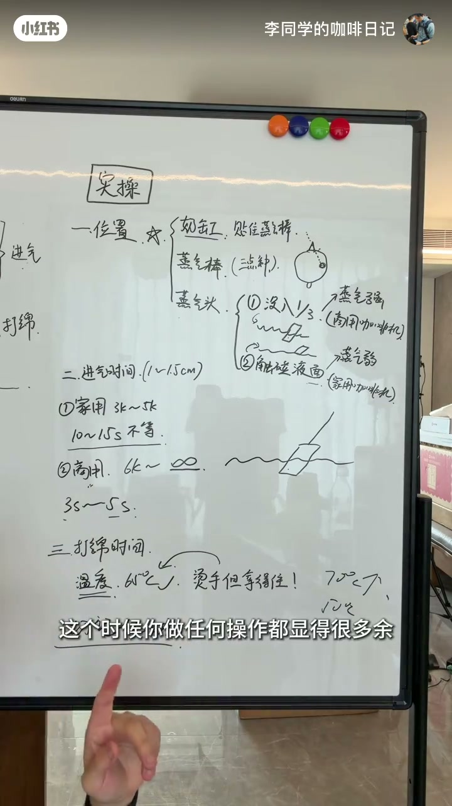
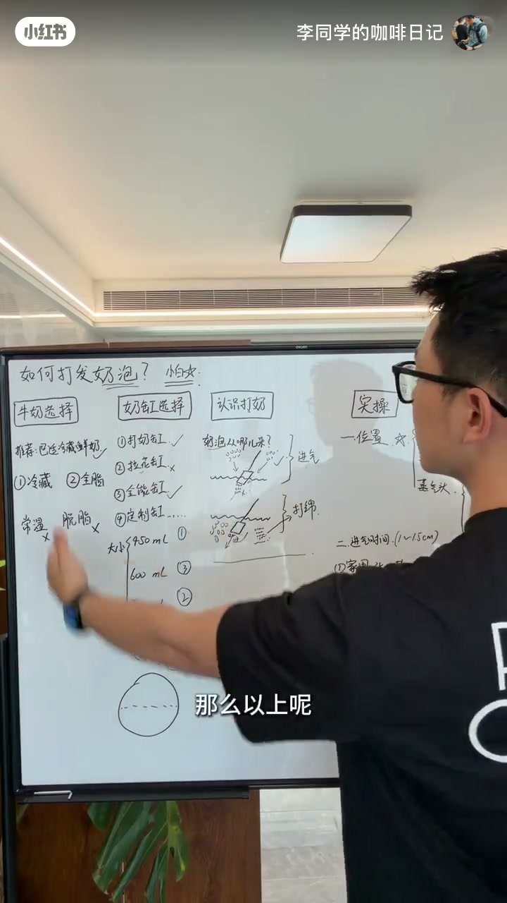

内容要点
在家学拉花系列第二课，主题是奶泡打发。UP 主把这条线拆成一条完整链路：先选牛奶（巴氏杀菌冷藏鲜牛奶，满足冷藏+全脂），再选奶缸（打奶泡用打奶缸/全能缸，避开直径最大的拉花缸），接着理解奶泡原理（进气+打棉两阶段），最后落到实操三件事——缸的位置（三点钟方向贴蒸汽棒）、进气时间（家用机10-15秒/商用机3-5秒）、打棉停点（理想65度，靠手感分级）。全程强调一个核心纪律：打棉期间不乱动，防止二次进气毁掉奶泡。
知识结构
在家学拉花第二课：如何打发好奶泡。涉及点较多，UP 主会讲得比较细。
首选巴氏杀菌冷藏鲜牛奶。关键条件只有两个：冷藏、全脂。只有常温盒装也尽量先放冰箱冰一会。
奶缸分打奶缸、拉花缸、全能缸、定制款等。打奶泡选打奶缸/全能缸，避免拉花缸——它的直径最大，旋转起来费劲。
奶泡由外部空气被搅入牛奶形成。对应两个阶段：进气（推力让牛奶旋转、搅入空气）、打棉（旋转切割大气泡成小气泡并均匀分布）。
缸嘴贴住蒸汽棒不悬空；蒸汽棒在三点钟方向（凭手感微调）。蒸汽头两种状态：蒸汽强（商用机）埋没三分之一，蒸汽弱（家用机）触碰到液面。
不是标准公式。家用机3000-5000元：约10-15秒，且蒸汽由弱到强渐变，要等变强、有进气声才开始计时；商用机6000元以上：约3-5秒，开蒸汽立刻打发。期间保持蒸汽头位置不变。
打棉停点靠温度判断：理想约65度。手感分级：烫手但拿得住约60度，拿不住70度以上，只有温热约50度。打棉期间切记乱动，防止二次进气。
奶泡打发 = 正确原料（巴氏冷藏全脂牛奶）× 正确工具（打奶缸/全能缸）× 两阶段操作（进气把空气搅入、打棉把大气泡切细）× 三个实操参数（三点钟贴棒位置、按机型的进气时间、65度停点）。核心纪律：打棉期间不乱动，一动就二次进气，奶泡基本没救。
00:00-00:27原料先行：巴氏冷藏全脂牛奶
课程以「如何打发好奶泡」开场。UP 主预告这个问题涉及的点比较多，会放慢节奏讲细一点。第一站是牛奶的选择。
市面上牛奶种类很多，UP 主首要推荐巴氏杀菌的冷藏鲜牛奶。如果不喜欢这个选择，换成其他牛奶也可以，「但是一定要满足两个非常重要的点：冷藏、全脂」。这两个条件对后面的牛奶打发至关重要。
实在只有常温盒装牛奶怎么办？UP 主给了补救方案：也尽量把它放到冰箱里冰一会，尽可能贴近冷藏鲜奶的状态。

00:27-01:02工具适配：打奶泡要选打奶缸
牛奶选定之后是奶缸。市面上的拉花缸种类很多，但「并不是所有的拉花缸都适合去打发牛奶」。UP 主给出了常见分类：打奶缸、拉花缸、全能缸、定制款等。
如果要打奶泡，尽量选择打奶缸和全能缸，避免用拉花缸去打牛奶。原因在尺寸：把三个缸摆在一起看，打奶缸直径最小，拉花缸直径最大。「直径太大了，那它旋转起来就很费劲」，旋转不顺畅，奶泡的均匀度就无从谈起。


01:02-01:35原理先行：进气与打棉两阶段
UP 主画了两张示意图讲解奶泡到底怎么来的：左边是蒸汽棒的头，右边是蒸汽棒本体。核心结论一句话——「奶泡是通过外面的空气搅进去所形成的」。
由此引出打奶泡的两个阶段。第一个是进气：蒸汽产生的推力让牛奶旋转起来，从而把外面的空气搅打进来。第二个是打棉：把刚打进来的大气泡，通过推力让牛奶旋转、切割，不断形成更小的气泡，「让它均匀的分布在这个牛奶当中去」。这一步就是打棉。


01:35-02:08实操第一问：缸的位置与蒸汽头状态
进入实操环节，第一步解决位置——缸的位置。要求是缸嘴贴住蒸汽棒，不要让它悬空站在空间里，「非常的不稳」。蒸汽棒的位置在三点钟，UP 主特别说明这不是绝对标准，凭手感会更准；从俯视图看，蒸汽棒是斜斜地插入三点钟方向。
蒸汽头对应两种状态。第一种：埋没三分之一，适用于蒸汽强的商用咖啡机；第二种：触碰到液面，适用于蒸汽弱的情况，也许是家用咖啡机。两种状态对应不同机器强度，是判断怎么放的依据。


02:08-03:04进气时间：按机器强度分别计时
第二问是进气时间。UP 主强调它「不是一个标准的公式可以去套的」，要根据机器强度和自己打奶的习惯去磨合。但他给出了经验总结。
家用咖啡机（价格3000-5000元档）：进气时间大约10-15秒。这么长的原因在于家用机的蒸汽是泵加热，由弱到强有个渐变过程——刚开时其实不会进气，这段时间不能算在进气时间内；要等蒸汽变强、牛奶旋转起来、有进气声了，才开始计时。
商用机（6000元以上到上不封顶）：进气时间约3-5秒。因为商用机只要一开蒸汽就立刻打发了。无论是哪种情况，这段时间都必须保持蒸汽头位置不变，维持埋没三分之一或触碰液面的状态。

03:04-03:54打棉停点：65度与手感温度法
第三步是打棉时间，何时停取决于蒸汽强度，而判断依据是温度。理想状态是牛奶达到65度左右；如果咖啡机有定温打奶功能，直接设置65度即可。
没有定温功能的话，UP 主教了一个手感法：烫手但拿得住，温度基本在60度上下；已经烫到拿不住，一般是70度往上走；拿过去只觉得温、没有任何烫感和痛觉，那大概在50度左右。
打棉期间还有一个必须守住的纪律：切记乱动。「你基本上埋进去了之后，就不需要你再做任何操作了」，这个时候任何多余操作都可能造成二次进气，「二次进气，那你的奶泡就基本上是没救了」。最后 UP 主总结：以上是家庭打奶泡的一些小技巧。

完整转录（162段）
以下文本由 Whisper medium 模型自动转录，可能存在少量识别误差，已尽可能修正。
我们今天呢是我们在家学拉花的第二堂课
如何打发好奶泡
这个问题涉及到的点比较多
我们慢慢的来
尽量给大家讲细一点
第一步呢是牛奶的选择
市面上有各种各样的牛奶
我们首要推荐的巴士杀菌的冷藏鲜牛奶
如果你不喜欢
想选择其他牛奶也是可以的
但是一定要满足两个非常重要的点
冷藏
全脂
这两个东西对我们后面的牛奶打发是非常重要的
如果你实在是只有那种常温的盒装呢
那你也尽量的把它放到冰箱里冰一会
那牛奶选择完之后
我们就要选择第二个东西
奶缸
我们市面上其实有各种各样的拉花缸更能选择
但并不是所有的拉花缸都适合去打发牛奶的
奶缸呢
我们一般有以下的一些分类
打奶缸
拉花缸
全能缸
定制款的等等等等
这里面如果我们要去打奶泡的话
尽量去选择打奶缸
全能缸
避免使用拉花缸去打牛奶
为什么拉花缸不适合打牛奶呢
因为奶缸它是有大小的
我们这样子看的时候
你就会发现这三个缸里面的大小
打奶缸是直径是最小的
拉花缸的直径是最大的
直径太大了
那它旋转起来就很费劲啊
所以我们尽量去选择打奶缸
奶泡到底是怎么来的
画两个图有点抽象
大家别介意啊
这个是我们蒸汽棒的头
这个是蒸汽棒
奶泡是通过外面的空气搅进去所形成的
那么就引出了我们打奶泡的两个阶段
进气
打棉
这个产生的推力
让牛奶旋转起来
从而把外面的空气搅打进来
打棉呢
就是把我们刚刚打进来的这一些大气泡
通过它的一个推力
让牛奶旋转
切割
不断的形成
更小的气泡
让它均匀的分布在这个牛奶当中去
这一步就是要打棉
OK
现在我们进入到最后一步
石操
在石操里面
我们第一步要解决的是位置
缸的位置
这个缸嘴
贴住我们的蒸汽棒
不要让它悬空的
站在这个空间里面
非常的不稳
蒸汽棒的位置在三点钟
三点钟这个位置不是一个绝对的
更感觉会好一点
从俯视的图来看
就是蒸汽棒
套住它斜斜的插入了三点钟的方向
蒸汽头
第一个情况
埋没三分之一
第二个情况
触碰到液面
什么时候我们要没入三分之一呢
蒸汽墙
商用咖啡机
什么时候我们触碰到表面呢
蒸汽弱
也许是家用咖啡机
第二个我们就来到了静气时间
这个静气时间
之前跟大家分享过去
它不是一个标准的公式可以去套的
我们要根据机器的强度
你自己打奶的习惯
去磨合出一个大概的时间
我这边的话就直接写总结
家用咖啡机
价格可能在3K到5K左右的
我们静气的时间
大概会去到10到15秒
为什么会有这么长
实际上你在使用家用咖啡机的时候
它那个蒸汽
它是蹦加热的
它由弱到强
它是有一个渐变的过程的
你刚开始开的时候
它其实是不会静气的
那个时候你不能算在静气时间以内
你应该等它变强
旋转起来了
有静气声音了
才能开始计时
第二个商用6K到上部封顶
这个静气时间的话
大概是3到5秒钟
因为商用这种机器
你只要一开蒸汽
它立刻就打发了
这段时间你必须要保持
你的蒸汽头的位置不变
埋没在这种三分之一
或者是触碰的状态下
持续这么久的时间
第三步的时候
我们就到了打棉时间
根据你的蒸汽的强度有关的
我们通过什么东西
去判断要不要停
就是温度
我们一般理想的状态
是达到一个65度左右的牛奶温度
可能有些咖啡机
它有那个定温打奶的功能
那你就设置到65度就比较好
那没有的话
我可以教你一个
就是我们用手去感受的一个状态
它这个状态就是烫手
但拿得住
这个温度基本上就在60度上下
如果它都已经烫到你拿不住了
这种一般都是70度往上走
如果你一拿过去
你只是觉得它是温的
它都没有烫的感觉
你都没有一丝痛觉
那这种情况一般都是在50度左右
这是一个我们判断
它温度的一个小方法
打棉时间我们需要注意的点
是切记乱动
你基本上埋进去了之后
就不需要你再做任何操作了
这个时候你做任何操作
都显得很多余
都有可能二次进气
二次进气
那你的奶泡就基本上是没救了
那么以上就是家庭打奶泡的一些小技巧
希望对大家有所帮助